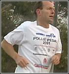

|
The Rise and Rise of Tony Abbott July 15, 2001 Reporter : John Lyons Producer : Paul Steindl Tony Abbott does not pull any punches, whether in the ring or on the hustings. The former pugilist is probably Australia's most controversial politician; he's not afraid to say what he thinks — an unusual trait in a member of parliament. Just this week, he angered the opposition by saying that governments could never "abolish poverty because poverty, in part, is a function of individual behaviour". Opposition Leader Kim Beazley used these comments to say every century threw up a Marie Antoinette (her phrase about the poor in Paris was "let them eat cake"), and that Tony Abbott was this century's. It wasn't the first time Abbott raised the hackles of his opponents. Two years ago, he sparked a loud debate when he called some unemployed people "job snobs", and earlier this year he set the cat among the pigeons when he criticised the pessimism of Australians who believed "we'll all be rooned", in the immortal words of Hanrahan, from the poem by John O'Brien. But there is another side to the pugnacious Abbott. He speaks at length to John Lyons about the 24-year-old son he's never met, who was adopted out as a baby. Abbott was a 19-year-old student when his girlfriend became pregnant. They considered getting married, but decided against it, choosing adoption. And what does Abbott think about having a 24-year-old walking around who's his son? "If you're in a situation like this there is always the possibility that one day you might get a knock on the door from a stranger who says 'g'day Dad', and it would be, a pretty ... it would be quite an interesting thing to have happen. It would certainly be a very powerful and emotionally raw moment." But Tony Abbott is clearly a man on the way up. Under Prime Minister John Howard's patronage, this former journalist, seminarian and rugby front-rower now has positioned himself for the top prize — the Prime Ministership. A recent peace meeting between Abbott and Peter Costello, patching up their differences over the Republic, has alarmed those in the Liberal Party concerned about Abbott's rise, and the likelihood of him becoming Costello's deputy. Tony Abbott has been a political animal since he was a schoolboy — a product of the Jesuits at the famous St Ignatius on Sydney's North Shore. He says the two most important influences in his formative years were his father, and Father Emmett Costello, a Jesuit priest. Fr Costello said he first met Abbott in 1974: "And I thought 'this guy is worth following'. So I spent a lot of time with him, and I encouraged him constantly to read deeply in history, especially Winston Churchill, and read his speeches so that he could communicate cogently to the world, and he took my advice." From school, it was on to Sydney University, where Abbott quickly gravitated to politics, joining other conservatives in targeting left-wing union leader Bill Hartley and seeking to secede from the Australian Union of Students. That battle saw an early alliance between Abbott and Peter Costello. Before politics, Abbott tried journalism. In the early 1980s, fellow journalist and now NSW Premier Bob Carr sounded out Abbott about joining the Labor Party. But Abbott only passed through journalism, where he wrote for The Bulletin and The Australian. Politics eventually beckoned, and he became an adviser to then Liberal Opposition Leader, John Hewson. As a politician, there is something refreshing about Tony Abbott. During the time Sunday's John Lyons spent following him around, it was clear that, unlike many other parliamentarians, he is prepared to relate to interest groups what they do not want to hear; for example, telling public school teachers about his commitment to private schools and workers whose jobs were in danger that if they lost their jobs, they should be able to find other ones. But Tony Abbott does not like his reputation as the Coalition's chief head-kicker, denying that he's a ferocious politician: "I mean, I know I've called Beazley a sanctimonious windbag. I said to Cheryl (Kernot), how could she talk about keeping the so-and-so's honest when she was taking their money. I think I talked about the Labor Party being more inbred than the House of Lords. I don't think these are particularly ferocious things to say." But his Opposition counterpart, Shadow Employment Minister, Cheryl Kernot, accuses Tony Abbott of unChristian behaviour. She and Abbott have had some almighty rows in Federal Parliament, with both expelled from the House of Representatives, following a brouhaha in Question Time last year. Also last year, Abbott's comments about Kernot's "keeping the so and so's honest," prompted a mass walkout by the Labor Party, after speaker Neil Andrew refused to order Abbott to withdraw his comments. Despite his headkicker's reputation, Tony Abbott has some powerful supporters of his political ambitions. Among them, the new Archbishop of Sydney, George Pell, who broke with long-held tradition in the Catholic Church, to endorse a political candidate. Archbishop Pell told John Lyons: "If he (Tony Abbott) ever got to that position, I think he'd make a very fine prime minister." But Abbott is clearly coy about his desire to become prime minister, as this exchange with John Lyons will demonstrate: Lyons: "How much would like to be prime minister of Australia, if the opportunity came up?" Abbott: "Well, the real point is if the opportunity came up." Lyons: "How much would you like to be prime minister?" Abbott: "And I doubt very much whether the opportunity ever will come up." |
|
|||||||||||||||||||||||||
| ninemsn sites
News
Sport
Finance
Music
Travel
Health
Video
Weather
Top sites
About ninemsn Careers at ninemsn Advertise Contact us Help Terms of use Privacy policy Online safety © 1997- 2006 ninemsn Pty Ltd - All rights reserved |